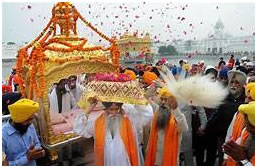
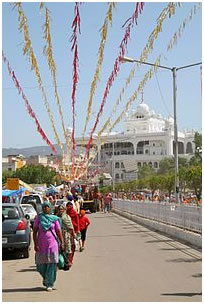
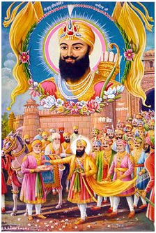
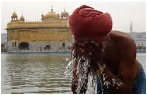
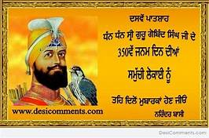
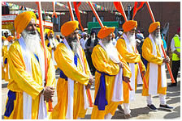

Sikhism


Gurupurab (November 22) |
 | Gurupurabs are anniversaries associated with the lives of the Sikh Gurus. The Sikhs celebrate 10 Gurpurabs in a year. At each of these festivals, one of the ten gurus of the Khalsa Pantha is honored. Of these the important ones are the birthdays of Guru Nanak and Guru Govind Singh and the martyrdom days of Guru Arjun Dev and Guru Teg Bahadur. | |
Vaisakhi (April 13) |
 | Vaisakhi at Takht Sri Keshgarh Sahib at Anandpur Sahib, the birthplace of the Khalsa Panth. In Punjab it is celebrated as the Birth of brotherhood. It is celebrated at a large scale at Keshgarh Sahib,Anandpur Sahib. In India,U.K.,Canada,USA, and other Sikh populated areas, people come together for a public mela or parade. The main part of the mela is where a local Sikh Temple (Gurdwara)has a beautiful Sikh themed float on which the Guru Granth Sahib is located and everyone offer their respect by bowing with much reverence and fervour. To mark the celebrations, Sikh devotees generally attend the Gurudwara before dawn with flowers and offerings in hands. Processions through towns are also common. Vaisakhi is the day on which the Khalsa was born and Sikhs were given a clear identity and a code of conduct to live by, led by the last living Sikh Guru,Guru Gobind Singh Ji, who baptized the first Sikhs using
| |
Bandi Chhor Divas(November 9) |
 | Bandi Chhor Divas ("Day of Liberation") (ਬੰਦੀ ਛੋੜ ਦਿਵਸ) is a Sikh holiday which coincides with the day of Diwali Sikhs historically celebrated Diwali along with Hindus, with Guru Hargobind sahib ji explicitly listing it along with Vaisakhi as a festival for Sikhs. In late 20th century, Sikh religious leaders increasingly called Diwali as Bandi Chhor Divas, and the Shiromani Gurudwara Parbandhak Committe adopted this name along with the aki calenn 20darshahNani03. | |
Maghi (January 14)
|
 | Maghi is the annual festival and one of the seasonal gathering of the Sikhs.It is celebrated at Muktsar in the memory of forty Sikh martyrs (Chalis Mukte), who once had deserted the tenth and last human Guru of Sikhism,Guru Gobind Singh at Anandpur Sahib, but later rejoined the Guru and died while fighting the Mughal Empire army led by Wazir Khan in 1705. Sikhs make a pilgrimage to the site of this Sikh-Muslim war, and take a dip in the sacred water tanks of Muktsar. | |
HolaMohalla ( March 17) |
Hola Mohalla or Hola Mahalla or simply Hola is a Sikh festival that takes place on the first of the lunar month of Chet which usually falls in March. This, by a tradition established by Guru Gobind Singh follows the Hindu festival of Holi by one day; Hola is the masculine form of the feminine sounding Holi. | ||
Parkash Utsav Dasveh Patshah (January 31) |
 | This festival's name, when translated, means the birth celebration of the 10th Divine Light, or Divine Knowledges.It commemorates the birth of Guru Gobind Singh, the tenth Sikh guru. The festival is one of the most widely celebrated event by Sikhs.
| |
Martyrdom of Guru Arjan (June 16) |
 | Panj Pyare, leading a procession of nagar kirtan marking the Shaheedi divas (martyrdom) The martyrdom anniversary of Guru Arjan, the fifth Guru, falls in June, the hottest month in India. He was tortured to death under the orders of Mughal Emperor, Jahangir, on the complaint of a Hindu banker Chandu Lal, who bore a personal enimity with Guru, at Lahore on 25 May 1606. Celebrations consist of Kirtan, Katha and Langar in the Gurdwara. Because of hot summer, chilled sweetened drink made from milk, sugar, essence and water is freely distributed in Gurdwaras and in neighborhoods to everybody irrespective of their religious belief as a sign and honour of the humble Guru who happily accepted his torture as a will of Waheguru and made no attempt to take any action. | |
|
A copy of Guru Granth Sahib, the eternal Sikh Guru It is the day when the Guru Granth Sahib was bestowed with the title of being the eternal and final Sikh guru thus ending the line of Human gurus. |